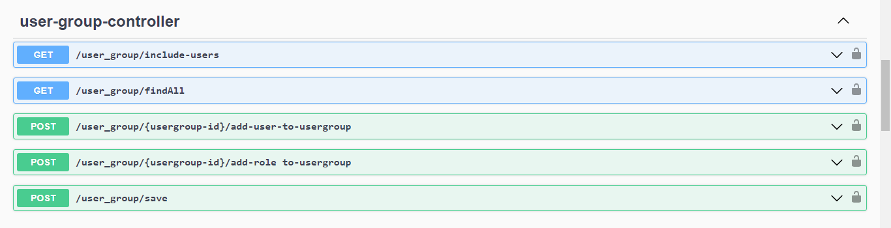
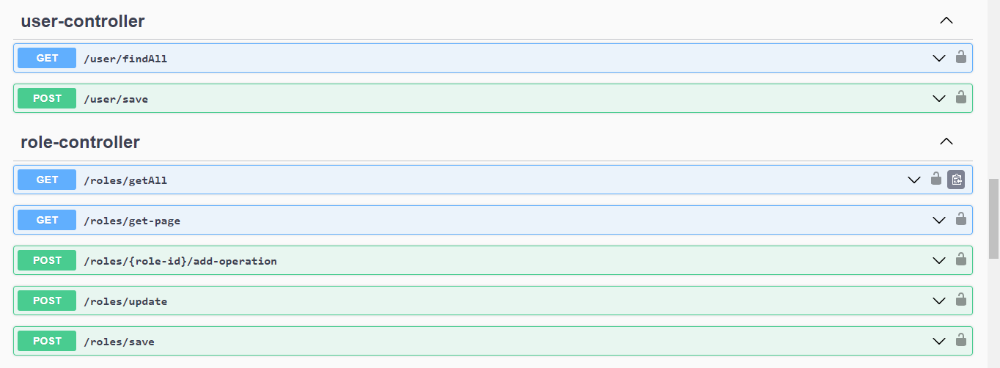
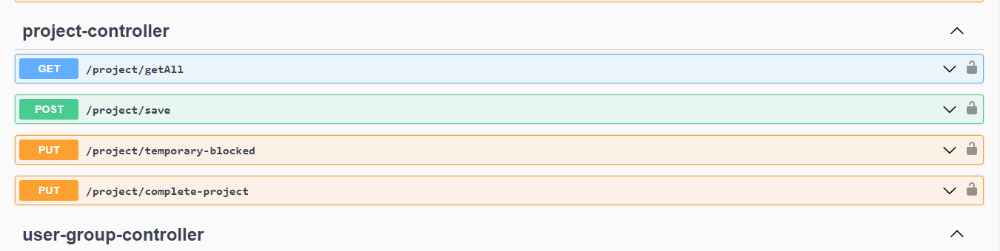
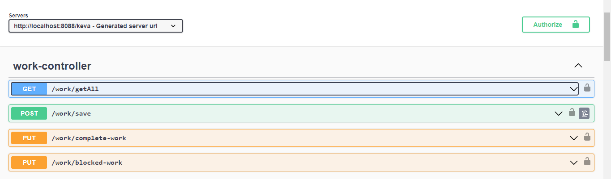
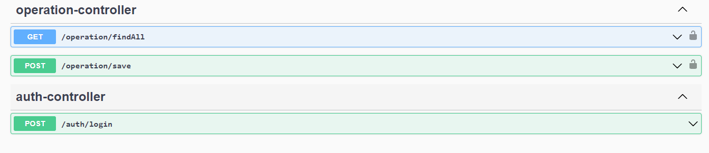

Project: Keva (14/02/2023 – 20/04/2023)
Link project1. Overview
The Keva project is a personnel management system developed with a backend written in Java, utilizing the Spring framework to build APIs that connect with the front-end. The system uses a MySQL database for data storage, and version control is managed through GitHub.
Key Features:
- CRUD User: Create, read, update, and delete user information.
- CRUD Role: Manage user roles with different permissions.
- CRUD Project: Track and manage project information.
- CRUD Work: Manage tasks, including creation, assignment, and progress tracking.
- User authentication and authorization: Ensure users can only access features according to their permissions.
The project aims to optimize the personnel management process, from tracking users, roles, to tasks and projects.
2. Role
Role: Project author
3. Technical
- Programming language: Java, framework: Spring Boot. Database management and versioning: Flyway, automatic generation of getter, setter, constructor: Lombok. Support for object mapping in the application: ModelMapper.
- Database Management System: MySQL
- Version control: GitHub
4. Feature
CRUD User: Create, read, update, and delete user information.
CRUD Role: Manage user roles with different permissions.
CRUD Project: Track and manage project information.
CRUD Work: Manage tasks, including creation, assignment, and progress tracking.
User authentication and authorization.
5. Summary
Keva is a backend project developed using Java and the Spring framework. It provides a set of RESTful APIs to manage users, roles, projects, and tasks for an organization. The system uses MySQL for data storage, and user authentication and authorization are implemented to ensure secure access control. Keva aims to streamline the management of personnel, projects, and work assignments.